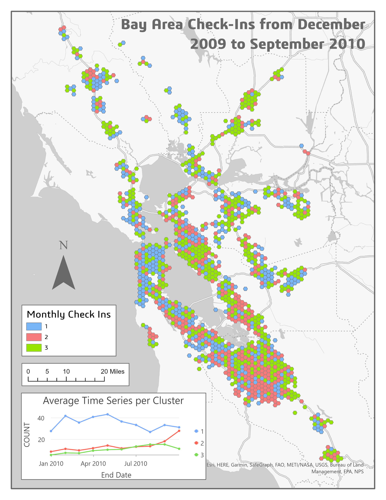
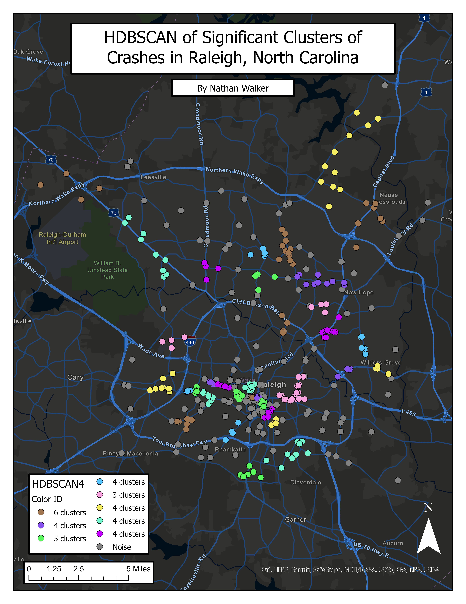
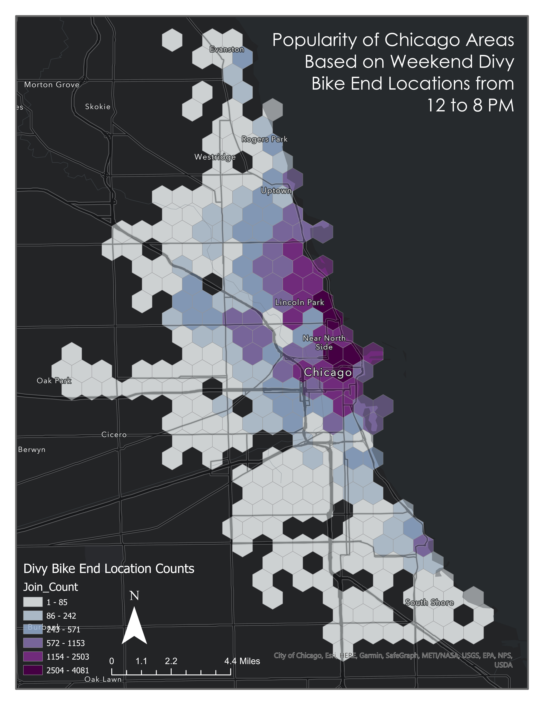
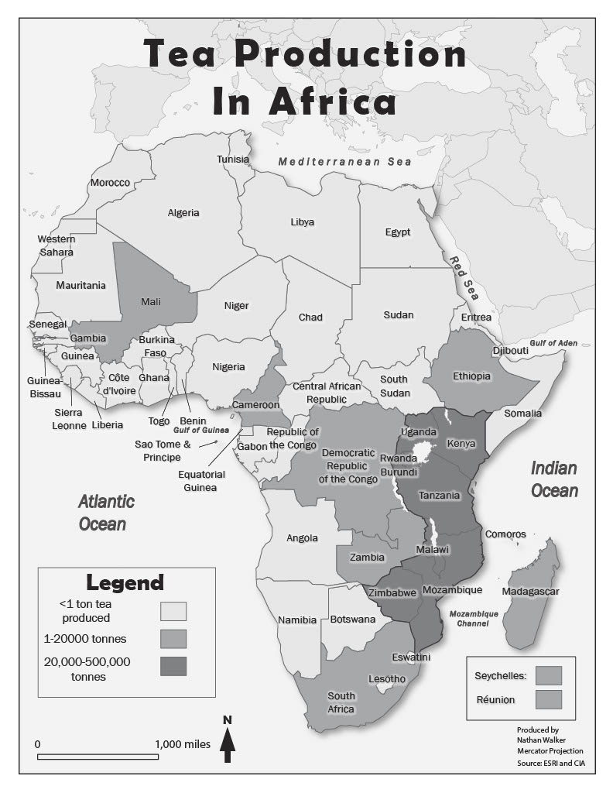
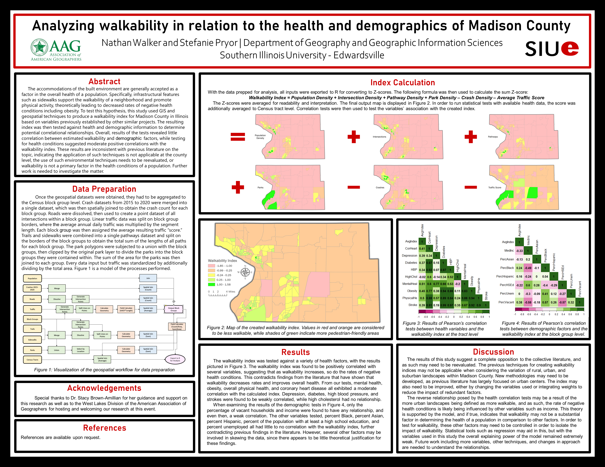
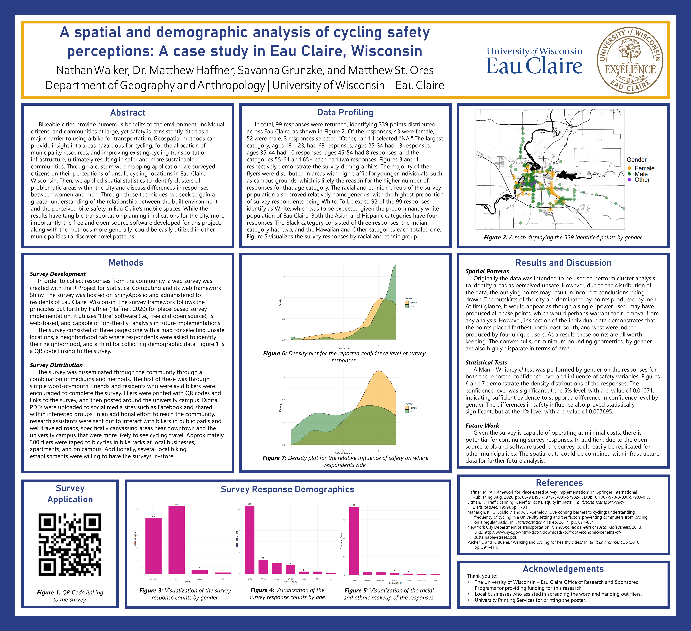

Work
Projects

Maps
Bay Area Time Series Analysis
Temporal GIS analysis tracking geographic change patterns across the San Francisco Bay Area.
View full map ↗

Maps
Traffic Crash Cluster Analysis
Spatial cluster analysis identifying high-density crash corridors and risk hotspots.
View full map ↗

Maps
Divvy Bikes Chicago – Popularity Tessellation
Tessellation map visualizing bikeshare station popularity across Chicago's neighborhoods.
View full map ↗

Maps · Illustrator
Africa Coffee Production Map
Custom cartographic illustration of African coffee production regions, designed in Adobe Illustrator.
View full map ↗

Maps · Blender
Vietnam Relief Map
3D relief map of Vietnam generated in Blender, highlighting the country's dramatic terrain and topographic features.
View full map ↗
Web App · R Shiny
Environmental Equity in Madison County
Interactive dashboard exploring environmental equity indicators across Madison County, Illinois. Built with R Shiny.
Open live app ↗
Web App · R Shiny
Spatial Autocorrelation Educational Tool
Interactive learning tool demonstrating spatial autocorrelation concepts for students and instructors.
Open live app ↗
M.S. Thesis
Analyzing Significant Built Environment and Socioeconomic Factors in Relation to Public Bike-Share Usage in Minneapolis, San Francisco, and Portland
Spatial econometric study examining how built environment and socioeconomic factors influence bike-share usage across three major US cities, using ACS, EPA Smart Location Database, and municipal datasets.
View PDF ↗
Research Paper
Hobbit or Kiwi: Lord of the Rings Tourism, Sustainability & National Identity
Analysis of film tourism's impact on New Zealand's national identity and sustainable tourism practices.
View PDF ↗
Research Paper
Vietnam National Instagram Content Analysis
Content analysis of Instagram posts representing Vietnam's national tourism narrative.
View PDF ↗
Research Paper
Nuclear Site Suitability Analysis – Wisconsin
GIS-based multi-criteria site suitability analysis for potential nuclear facility locations in Wisconsin.
View document ↗
Research · Capstone
Urban Heat Island Analysis – Milwaukee, Wisconsin
Capstone research analyzing demographic and socioeconomic exposure to the urban heat island effect in Milwaukee.
View PDF ↗

Poster
Walkability Analysis
Spatial analysis of urban walkability scores and contributing environmental factors.
View full size ↗

Poster
Cycling Safety Analysis
Visual analysis of cycling safety patterns, risk factors, and infrastructure.
View full size ↗
R — Spatial Econometrics
Spatial Regression: Illinois Census Tracts
Compares OLS, Spatial Lag, and Spatial Error models predicting poverty and educational attainment across Illinois census tracts. Builds queen-contiguity spatial weights, runs Moran’s I and Lagrange Multiplier diagnostics to select the appropriate model specification, and exports formatted comparison tables via stargazer.
View code →
R — Data Analysis
Descriptive Statistics & Index Construction
Generates summary statistics (mean, median, IQR, skewness, kurtosis) and distribution plots for demographic and income variables across Illinois census tracts. Constructs a custom Educational Index via z-score normalization across four education attainment variables, and a Diversity Index based on deviation from proportional racial equality.
View code →
R — Statistics
Correlation Analysis & Matrix Visualization
Implements a reusable
View code →
correlation_tests() function that runs Pearson correlation tests against a target field across any set of variables, returning coefficients, R², and p-values. Applied across GSS 2018 and U.S. States datasets to examine relationships between age, education, crime, and income variables. Produces correlation matrix plots with significance markers via corrplot.C++ — Arduino / IoT
Culver's Flavor of the Day Tracker
ESP32 Arduino sketch that connects to WiFi, queries the Culver's locations API, and displays the Flavor of the Day for up to 9 nearby locations on a TFT display. Cycles through locations every 12 seconds and refreshes data every 50 minutes.
View code →
JavaScript — Canvas / Generative Art
Topographic Background Renderer
Procedurally generates an animated topographic contour line background using a Gaussian height field and Marching Squares. Peaks are randomized on each load, contours are extracted at multiple elevation levels, raw segments are chained into polylines, and each line draws itself in with a staggered ease-out animation.
View code →
Tutorial / Workshop
WLIA ArcGIS Online Hosted Feature Layer Management
A series of Jupyter notebook scripts for managing hosted feature layers in ArcGIS Online, developed for the Wisconsin Land Information Association.
View on GitHub ↗
Tutorial / Workshop
Geodatabase Tutorial
Step-by-step guide to creating and managing geodatabases in ArcGIS.
View PDF ↗
Tutorial / Workshop
GIS Hospital Site Selection Tutorial
Interactive walkthrough of GIS-based hospital site selection methodology.
Open tutorial ↗
Conference Presentation — May 2025
GIS Software Solutions for MS4 Illicit Discharge Detection and Elimination
Presented scalable GIS-based approaches for MS4 illicit discharge detection and elimination at the Wisconsin Land Information Association Spring Conference, Pewaukee, WI.
Conference Presentation — November 2024
Unlocking Data Potential: Using the ArcGIS Data Interoperability Extension to Meet DNR LCRR Requirements
Presented at the ESRI Wisconsin User Group in Green Bay, WI, demonstrating how the ArcGIS Data Interoperability Extension can be leveraged to satisfy DNR Lead and Copper Rule Revisions reporting requirements.